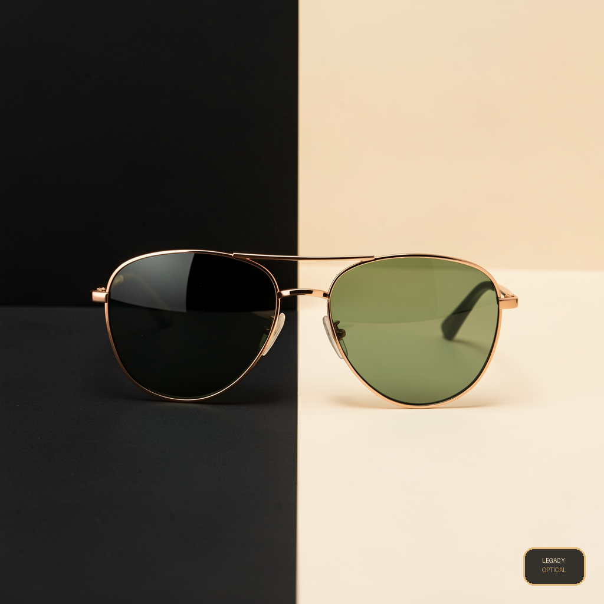

Post 01assets/legacy_optical_noir_post_01.png
ForgeGraph client handoff
Legacy Optical Noir — entrega para revisión
Paquete armado desde el prompt operativo, con estrategia, contenido, assets, medición, QA y evidencia de linaje listos para aprobación. No se afirma publicación en vivo: el lanzamiento queda condicionado a aprobación y conectores reales.
Approval checkpoint
Decisión solicitada
- Dirección visual Optical Noir
- Uso de los assets incluidos como borradores de campaña
- Tono Spanish-first, concreto y de baja exageración
- Launch posterior sólo con aprobación y recibos de canal
Artifact Index
ForgeGraph archived run
Engagement, whiteboard, asset checksums, source deliverables, and media provenance are archived in manifest.json. The visible handoff keeps internal IDs out of client copy.
No Markdown files included.
Assets
Posts incluidos

Post 02assets/legacy_optical_noir_post_02.png

Post 03assets/legacy_optical_noir_post_03.png

Post 04assets/legacy_optical_noir_post_04.png
Post 05assets/legacy_optical_noir_post_05.png

Post 06assets/legacy_optical_noir_post_06.png
Codex Strategy Brief
Legacy Optical Noir Strategy Brief
Legacy Optical Noir Weekend Social Launch Package
Strategy Research Brief
Client: Legacy Engagement: Weekend marketing sprint Purpose: Establish the strategic foundation for a client-ready weekend social launch package that clearly explains the Optical Noir concept, separates social rollout strategy from operational logistics, ensures visible Legacy brand presence across all post assets, and adds image-quality safeguards before final delivery.
Strategic Objective
Launch Legacy Optical Noir as a refined weekend social campaign that positions Legacy as a modern optical brand with taste, confidence, and visual authority. The campaign should drive attention, brand recall, and product interest over a concentrated Friday-to-Sunday window while maintaining a premium, cohesive look across all creative outputs.
The campaign should not feel like a generic eyewear promotion. It should feel intentional, cinematic, and recognizably Legacy.
Core Strategy
Legacy Optical Noir uses noir-inspired visual language to give eyewear a stronger cultural and emotional frame. The campaign should present frames as objects of style, identity, and presence, not just functional products.
The weekend launch should focus on three strategic jobs:
- Create immediate visual distinction in crowded social feeds.
- Make Legacy unmistakably present in every asset.
- Move audiences from intrigue to action through a clear weekend sequence.
Noir Rationale
The noir direction is strategic, not decorative.
Noir works for Legacy because optical products are naturally tied to perception, focus, identity, mystery, and personal style. The noir aesthetic amplifies those ideas through contrast, shadow, reflection, and cinematic framing.
The rationale should be communicated as:
- Eyewear as identity: Frames change how a person is seen and how they see the world.
- Contrast as premium signal: Black, white, silver, and deep shadow create a refined visual system that feels more elevated than standard retail color palettes.
- Mystery as engagement: Noir gives the campaign a reason to pause. It creates intrigue before product detail.
- Legacy as the anchor: The mood may be cinematic, but the brand remains clear, visible, and trusted.
The creative should avoid becoming too dark, vague, or abstract. Noir should sharpen the product and brand, not hide them.
Audience Focus
The campaign should speak to style-conscious optical customers who care about how frames look, feel, and signal personal taste. The audience is likely to respond to polished visuals, confident copy, and direct calls to explore, book, shop, or visit.
Primary audience mindsets:
- “I want eyewear that feels stylish, not clinical.”
- “I notice brands that look refined and intentional.”
- “I need a reason to pay attention this weekend.”
Weekend Social Rollout vs. Logistics
The social rollout is the audience-facing content sequence. Logistics are the behind-the-scenes requirements that make the campaign executable. These should remain distinct in all planning and client presentation.
Weekend Social Rollout
The rollout should follow a simple arc: reveal, deepen interest, convert.
Friday: Campaign Reveal Introduce Legacy Optical Noir with the strongest hero visual. The goal is to establish the look, name, and mood immediately.
Recommended post types:
- Hero feed post
- Story teaser
- Reel or motion cutdown if available
Primary message: A sharper way to see the weekend. Legacy Optical Noir begins now.
Saturday: Product and Style Focus Show frames more clearly. Move from atmosphere into selection, fit, detail, and personal style.
Recommended post types:
- Carousel featuring 3-5 frame moments
- Story poll or frame preference prompt
- Short-form video showing close-ups, reflections, or try-on moments
Primary message: Noir is the mood. Legacy is the frame.
Sunday: Final Push and Action Shift toward urgency, visit intent, appointment intent, or shopping behavior.
Recommended post types:
- Reminder post
- Story countdown or final call
- Product-forward asset with clear CTA
Primary message: Last call for the weekend launch. Step into Legacy Optical Noir.
Operational Logistics
Operational logistics should support the rollout but should not be confused with the social strategy.
Required logistics:
- Confirm final post count and platform formats before production lock.
- Confirm who posts, who approves, and who monitors comments/messages.
- Confirm store, booking, product, or landing-page CTA before captions are finalized.
- Confirm weekend hours, availability, and customer-service coverage.
- Confirm any paid boosting requirements, audience targeting, and budget.
- Confirm image QA and brand visibility review before packaging.
Creative Direction
The campaign should be visually premium, high-contrast, and product-led.
Recommended visual principles:
- Use black, white, charcoal, silver, glass, reflection, and controlled highlights.
- Keep faces, frames, and product edges crisp.
- Use shadow for drama, not obscurity.
- Let Legacy branding appear cleanly and consistently.
- Avoid over-filtered, muddy, or low-legibility images.
- Maintain enough contrast for mobile viewing.
Brand Presence Requirement
Every post asset must include visible Legacy brand presence.
Acceptable brand-presence methods:
- Legacy logo or wordmark in a consistent corner placement.
- Legacy Optical Noir campaign lockup.
- Branded frame card or footer treatment.
- Product tag or overlay that includes Legacy.
- End card for video/Reels with Legacy logo and CTA.
Brand presence must be visible without overpowering the product. The viewer should know the asset belongs to Legacy within the first second.
Minimum standard: No asset should be approved if it could be mistaken for an unbranded fashion or stock image.
Content Pillars
1. Noir Reveal Purpose: Establish the campaign world. Tone: Cinematic, refined, intriguing.
2. Frame Focus Purpose: Show product detail and style value. Tone: Confident, tactile, polished.
3. Weekend Momentum Purpose: Create urgency and guide action. Tone: Direct, energetic, premium.
4. Legacy Signature Purpose: Reinforce brand trust and recognition. Tone: Clear, assured, modern.
Caption Strategy
Captions should be concise and polished. They should explain the campaign without over-explaining the aesthetic.
Sample caption direction:
- “A sharper mood for the weekend. Legacy Optical Noir is here.”
- “High contrast. Clear vision. Frames with presence.”
- “Step into the weekend through Legacy Optical Noir.”
- “Noir-inspired styling, Legacy-level clarity.”
CTAs should be specific once the final action is confirmed:
- Shop the collection
- Book your visit
- Stop in this weekend
- Explore the launch
- Message us for frame availability
Image QA Standard
Before delivery, all images should be reviewed against a weak-image QA checklist.
Reject or revise images that show:
- Blurry frames, faces, hands, or product edges.
- Product hidden by excessive shadow.
- Logo too small, cropped, distorted, or low contrast.
- Visuals that feel generic, stock-like, or disconnected from Legacy.
- Poor mobile readability.
- Awkward cropping on feed, story, or reel formats.
- Overly dark noir treatment that reduces product appeal.
- Compression artifacts, pixelation, or muddy blacks.
- Inconsistent color grading across the package.
QA decision framework:
- Approve: Strong image, clear product, visible Legacy brand, premium noir feel.
- Repair: Good concept but needs crop, contrast, logo, or grading adjustment.
- Replace: Weak image that cannot meet campaign quality standards.
Measurement Priorities
The weekend sprint should be evaluated on brand attention and action signals.
Primary metrics:
- Reach and impressions
- Engagement rate
- Saves and shares
- Story taps, replies, and link clicks
- Profile visits
- Appointment, store, or inquiry actions
- Paid performance if boosted
Qualitative review should also assess:
- Did the noir rationale come through clearly?
- Was Legacy visibly present on every asset?
- Did the campaign feel premium and cohesive?
- Were any images weaker than the campaign standard?
Client-Facing Positioning
Legacy Optical Noir should be presented as a focused weekend launch concept built around style, clarity, and visual distinction.
Recommended positioning line:
Legacy Optical Noir transforms the weekend eyewear launch into a cinematic brand moment: sharp frames, high contrast, clear presence, and unmistakable Legacy identity.
Required Next-Stage Inputs
Before Brand, Channel, CRM, Analytics, QA, and Client Approval stages proceed, the following must be confirmed:
- Final CTA destination or action.
- Final platform list.
- Final asset count by format.
- Approved Legacy logo/lockup files.
- Product/frame selection.
- Weekend timing.
- Approval owner.
- Paid or organic-only decision.
- QA owner for image review.
Strategy Recommendation
Proceed with the Legacy Optical Noir direction, with four guardrails:
- Keep the noir concept tied to vision, identity, contrast, and premium eyewear.
- Present the weekend rollout as a social content sequence, separate from execution logistics.
- Require visible Legacy branding on every asset.
- Run image QA before delivery and replace weak visuals rather than packaging them.
Message House
Legacy Optical Noir Message House
Legacy Optical Noir Message House Strategic rationale: Optical Noir is a premium contrast system for product photography, not a literal night-use claim for sunglasses. Why it works: black, ivory, copper, and controlled reflections make frames and lenses feel sharper, more editorial, and easier to remember in-feed. Positioning: lujo usable para CDMX; editorial, sobrio, accesible-premium. Brand presence: every social post should carry a Legacy logo or approved brand mark treatment unless the client explicitly requests clean product-only assets. Primary CTA: revisar estilos y aprobar piezas antes de publicar. Tone: Spanish-first, concrete, low-hype, confident.
Crm Scripts
Legacy WhatsApp / DM Response Scripts
WhatsApp / DM scripts Disponibilidad: Te confirmo modelo/color y te comparto alternativas si ya se movió. Precio: Son piezas premium; te ayudo a elegir el par que mejor se vea y más uses. Cierre: ¿Quieres que te aparte este modelo o prefieres ver dos opciones más?
Measurement Plan
Legacy Manual Measurement Plan
Track the weekend social rollout and posting cadence: post saves, replies, profile visits, link clicks, DMs, holds, sold/blocked status, and next action every 24h. This is a posting and review cadence, not a shipping or fulfillment timeline unless the client provides logistics details. Hold live claims until connector evidence exists.
Channel Asset Map
Legacy Channel Asset Map
Channel Asset Map
Qa Report
Legacy Launch QA Report
QA Report Media jobs succeeded: 6/6 Client package formats: HTML, PDF, PNG, JSON manifest, ZIP; no Markdown files. Policy: no live publishing claim; approval required before production launch. Decision: ready for review